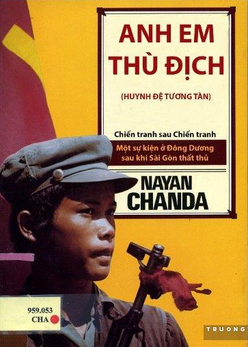

« Back
Anh Em Thù Địch
By Nayan Chanda

Giải Bày Của Người Dịch
Lịch Sử Các Nước Đông Dương Sau Khi Saigon Sụp Đổ
Dẫn Nhập: Con Đường Thoát
Kẻ Thù Cũ, Chiến Tranh Mới
Chiến Trận Giành Hải Đảo
Lê Duẩn Đi Phnom Pênh
Dồn Quân Tới Trường Sa
Hành Động Chiến Tranh Đầu Tiên
Nỗi Sợ Hãi Có Căn Cứ
Chẳng Có Thì Giờ Để Tiệc Tùng
Thời Gian Khó Khăn Cho Một Toán Quay Phim
Sự Im Lặng Khó Chịu Ở Bắc Kinh
Thái Tử Norodom Sihanouk: Kẻ Chiến Thắng
Tơ Tằm Và Chuột
Nam Tiến Từ Bảo Vệ Đất Nước Tới Liên Bang
Nam Tiến
Giữa Đế Quốc Và Ông Hoàng
Cuộc Chiến Đấu Vũ Trang Bắt Đầu
Liên Minh Thuốc Độc
Bắc Kinh: Ra Mắt
Sự Quan Tâm Ở Phnom Pênh
Những Cơn Gió Lạnh Từ Bắc Kinh Thổi Tới
Một Lễ Chu Niên Về Việc Giết Người
Mối Sợ Hãi Về Một Liên Bang
Hà Nội Đánh Cuộc Với Đặng
Bắc Kinh Nhe Răng
Tình Hữu Nghị Bị Xúc Phạm
Sự Láo Xược Của Chiến Thắng
Một Nhân Vật Bí Mật Ở Bắc Kinh
Thái Tử Norodom Sihanouk: Nương Thân
Một Nét Tổng Quát Về Lịch Sử
Châm Cứu Ở “Ngón Chân”
Đánh Để Cho Dài Tóc
Bây Giờ Chiến Đấu, Triều Cống Sau
Sự Cai Trị Của Các Đồng Chí
Gìn Giữ Hòa Bình Giữa Những Bộ Tộc Man Rợ Phía Nam
Một Môn Đồ Khổng Giáo Ở Genève
Chính Sách Bảo Hộ Của Mỹ Đối Với Bắc Kinh
Muốn Có Hai Hay Ba Việt Nam
Cánh Cửa Mở Ra Với Phương Tây
Chờ Trận Mưa Đôla
Dấu Hiệu Sai Lầm Phía Hà Nội
Từ Paris, Với Chagrin
Gió Tây Thắng Thế
Ngày Họ Hồ Khóc Với Nỗi Vui Mừng
Moscow Đề Phòng Chủ Nghĩa Cơ Hội
Nền Độc Lập Đắt Giá
Suslov Vội Vàng Trở Về Nước
Cuộc Tranh Cải Khó Khăn Mùa Hè
Không Khí Tĩnh Lặng Trước Bão
Cuộc Chiến Bí Mật
Thử Nghiệm Nước Ở Bắc Kinh
Đã Tới Lúc Cầm Tay Pol Pot
Một Ông Hoàng Cố Gắng Đấu Tranh Cho Hòa Bình
Vén Lên Bức Màn Che Dấu Chiến Tranh
Cái Đuôi Chó Ve Vẫy
Kế Hoạch Của Hà Nội Đối Với Kampuchia
Sự Hình Thành Quân Giải Phóng Khmer
Thái Tử Norodom Sihanouk: Mắc Kẹt Trong Lồng
Con Đường Đi Tới Chiến Tranh
Bác Sĩ Jekyll Và Ông Hyde Ở Phố Tàu
Sự Quấy Nhiễu Tái Sinh
Hà Nội Quay Tròn Theo Đuôi Rồng
Lời Đồn Đãi Chiến Tranh
Phương Đông Đỏ
Thân Mình Kampuchia, Trí Óc Việt Nam
Trung Hoa Thấy Được Âm Mưu
Đã Đến Lúc Phải Dạy Cho Một Bài Học
Người Mỹ: Hãy Về Đi
Gõ Cửa Nhà Mỹ
Chuyến Đi Hạ Uy Di
Thời Gian Để Liên Minh
Kẻ Hở Của Tòa Bạch Ốc
Brzezinsky Đi Thăm Vạn Lý Trường Thành.
Kế Hoạch Dựng Tòa Đại Sứ Mỹ Ở Hà Nội
Đánh Lá Bài Trung Hoa
Những Lỗ Rò Ở Bangkok
Holbrooke Thực Hiện Chuyến Đi Vì Nhiệm Vụ
Thái Tử Norodom Sihanouk: Người Sống Sót
Một Mùa Giáng Sinh Đỏ
Hiệp Ước Hữu Nghị, Chẳng Có Ai
Tìm Kiếm Bảo Đảm Từ Phía Liên Xô
Vận Chuyển Súng Đạn Về Phía Nam
Đặng Nhận Lãnh Vai Trò Kiểm Soát
Thời Gian Để Người Mỹ Lên Tàu
Sẵn Sàng Hành Động Cuối Cùng
Ông Hoàng Của Mọi Mùa
Cánh Cửa Hậu Để Vào Mặt Trận
Chiến Dịch Bắt Đầu
Tiệc Tùng Chấm Dứt
Sứ Mạng Bí Mật Ở Utapao
Brzexinski Thắng Một Trận Ở Hoa Thạnh Đốn
Sự Chói Sáng Của Một Quyền Lực Còn Non Nớt
Một Thông Điệp Cho Mạc Tư Khoa
Vũ Khí Mới, Chiến Tranh Cũ
Một Cái Nháy Mắt Của Hoa Thạnh Đốn
Một Bài Học Cho Tất Cả
Đông Dương: Chiến Tranh Bao Giờ Chấm Dứt
Ba Quốc Gia, Một Dòng Trôi
"Nếu Phnom Pênh Sụp Đổ Saigon Sẽ Sụp Đổ Theo."
Sự Khai Sinh Con Đường Mòn Đặng Tiểu Bình
Vú Em Của Đặng
Liên Minh Chiến Đấu
Học Cách Sống Với Việc Từ Chức
Vịnh Cam Ranh: Con Gấu Miền Nam
Tuyết Tan Ở Liên Xô, Hà Nội Lạnh Lẽo
Vai Trò Của Chú Sam
Tính Toán Đúng Thời Điểm
Chương Cuối
Tương Lai Đông Dương Sẽ Ra Sao?